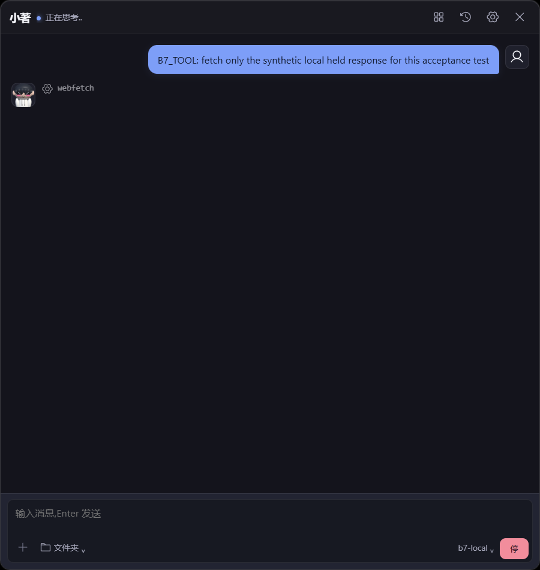
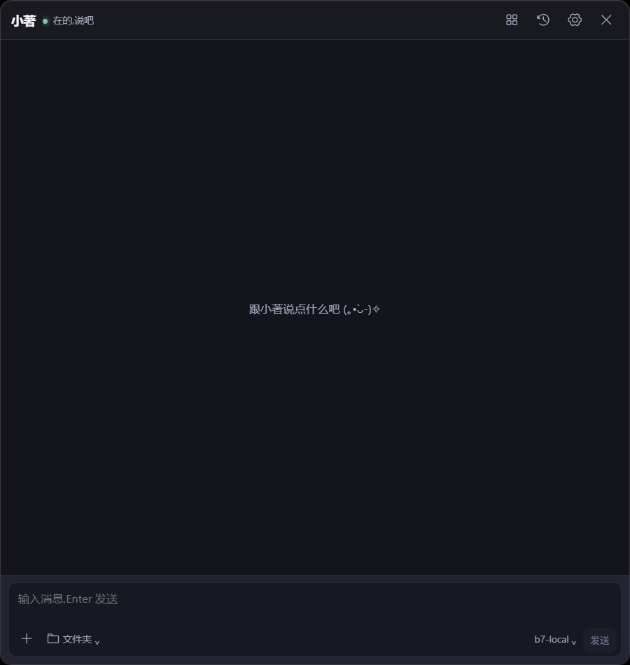

2026-10-28 · 0.4.21 · 本地提交 8702347 / 36a3c2e
20 项原审计都有明确处置；本轮修复 Stop 取消误报与历史日志回执作用域。未推送、安装日常版本或发布。
完整报告与开发建议 · 结构化结果 · 逐项矩阵 · SHA 清单| 最终门禁 | 结果 |
|---|---|
| 前端 / Rust | 1373 / 974 pass；0 fail，8 skip / 24 ignored 保留 |
| 真实流式 | 1000 历史消息；10k/50k 各 500 块且全文 SHA 一致；Stop/焦点/续聊通过 |
| 活跃工具二次启动 | 10 次退出 0；同一工具只执行一次并完成 |
| 32 次 / 32 worker 释放；后五点堆波动 6.5 KiB | |
| 原生宠物与空闲 | GIF / rig2d / GLB 隐藏恢复；603.7 秒空闲观察与真实 sleep |
活跃工具期间二次启动后，Stop 保持可见。

同 125% DPI 的竖屏副屏；横屏副屏截图字节一致。

Mac 最终实机验收、混合 DPI/高刷、原生 GPU/功耗受控 A/B、真实模型语义和任意故障注入仍未建立。保留 60 fps 与原模型，不宣称整机提速百分比。详情见完整报告。
保留的失败与探针修正